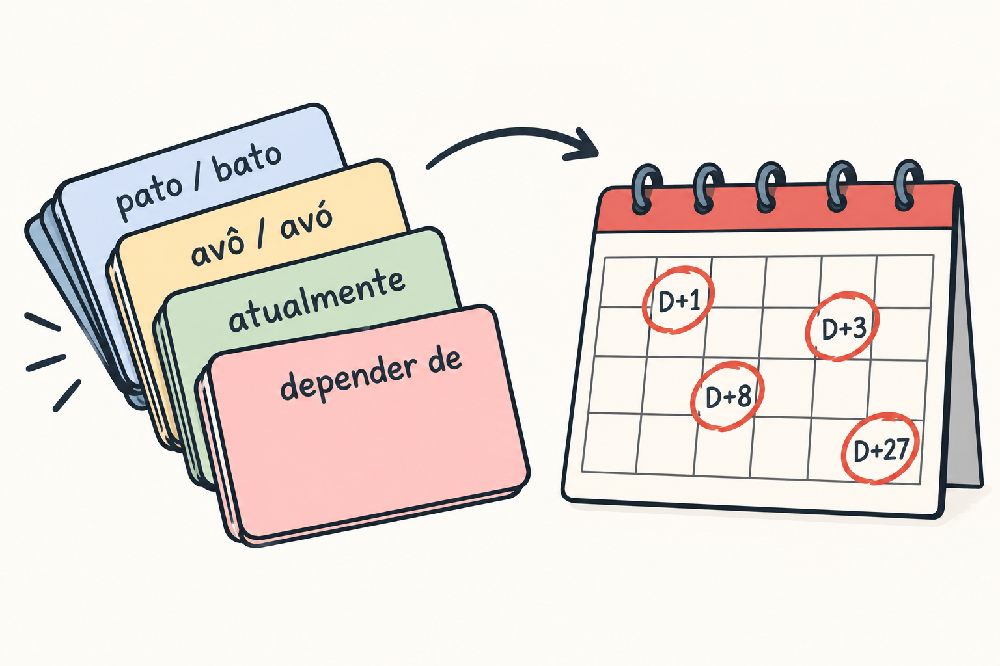

A book can show you a trap once. It cannot make you stop falling into it. That second job belongs to practice, and practice goes wrong in a predictable way: the learner rereads the chapters, feels familiar with them, and mistakes the feeling for skill. A week later the same mistakes come out of the same mouth.
The objective of this chapter is to turn the traps of the earlier chapters into a small review deck, with a rule for ordering the cards and a routine for getting corrected. The English-speaker difficulty is double. The first part is persistent errors, the kind that can settle in an adult learner's interlanguage and stay [F50]. The second part is a review habit built on rereading instead of recall.
This chapter keeps the theory short on purpose. It states the rules the deck follows, names the evidence for each rule in one sentence, and spends the rest of its length on what goes in the deck and how to use it. Every card example below is the author's illustration, and every practical suggestion is the author's suggestion unless a source is cited.
Three rules shape the deck. Each one has a source, and each one is applied here in the narrowest way the source allows.
The first rule is to test yourself and then check, instead of rereading. Research comparing self-testing with restudy favors testing, and it favors testing with feedback most [F94]. A card is therefore a question with an answer on the back, and you answer from memory before you turn it over.
The second rule is to space the reviews. Spacing helps retention [F90]. The calendar at the end of each chapter in this book is the author's adaptation of that idea, and the deck uses the same days as its default rhythm: return to a card after one day, then three, then eight, then twenty-seven, and move it further out only when you answer it correctly without hesitation.
The third rule is the one most learners get wrong, and it needs care. Interleaving, which means mixing different kinds of items in one session, helps in similar categories but hurts in plain word lists [F97]. The practical consequence is a restriction: this deck interleaves only the pairs that an English speaker confuses with each other. Do not shuffle your whole vocabulary into one pile. Shuffle a card about the open and closed vowels in avô and avó with a card about a nearby vowel contrast, because the point is to practice telling similar things apart.
There is a reason the deck is small and repeated. Persistent errors can fossilize in the interlanguage of an adult learner [F50]. A long deck full of everything you might get wrong spreads your attention thin and lets the real habits survive. A short deck of the errors you actually make, reviewed again and again, attacks the habits directly. As the author's suggestion, cap the deck at a number you can review in ten minutes, and remove a card only after several correct answers on spaced days.

The deck has four families of cards. Nothing else goes in. If an item is not one of these four, it belongs in your notes or your reading, not in the deck.
The first family is the present perfect. Research on English native speakers learning Portuguese documents transfer of the present perfect at all levels [F71]. The error is to build a Portuguese sentence on the English pattern of "have" plus a past participle, when Portuguese wants a different tense for the same idea.
Author's illustrations of cards:
Write the card in both directions only if you make the error in both. Most readers need the English-to-Portuguese direction, since that is where the transfer happens.
The second family is sound. It has two parts, and the sources differ in how directly they apply to you.
The mid-vowel part is well matched. A study of native speakers of American English documents difficulty in the perception and production of Portuguese mid vowels, together with overcorrection [F18]. Cards for this part pair a word with the closed vowel against a word with the open one, in the style of avô and avó, or pôde and pode, and ask you to say which is which before you turn the card.
The voice onset time part needs a warning. The study behind it measured the stop sounds of Brazilians learning English, a study of Brazilians learning English, the reverse direction from this audience [F24]. For that reason the voice onset time cards are an inference for you and not a finding about you: the author's inference is that the contrast English speakers rely on, aspiration, may show up in the other direction as well. Treat the cards as practice material, not as a diagnosis.
Author's illustrations of cards for this family:
Remember what the cards are for. You are training your ear and mouth on pairs where an English speaker is likely to blur the difference. They are not a promise that any particular pair is hard for you.
The third family is the small core of false friends. The cards carry the Portuguese word on the front and ask for the meaning, then the English word that tempts you on the back. The core items are atualmente, pretender and parentes.
Author's illustration of a card: Front: "Atualmente, eu moro em Recife." Back: "At the moment, I live in Recife." The point of the card is the first word. Keep the extended list from the appendix out of the deck until you have made a mistake with a particular item. A false friend that has never tripped you does not earn a card.
The fourth family is the preposition that belongs to a verb. The preposition that goes with a verb in Portuguese is a source of interference from English, although the literature mostly studies the reverse direction and there is a lack of studies on English speakers [F73]. Say that plainly to yourself when you build these cards: they come from the book's contrast with English and from your own mistakes, and the cited source supports only the existence of the interference.
Author's illustrations of cards:
The author's suggestion is to add a regência card only after you have written or said the wrong preposition at least once. The deck is a record of your errors, not a list of everything the language has.
A deck of cards fixes errors you can notice. Many errors you cannot notice, because they sound right to you. That is why the routine has a second half, and the second half needs another person.
Ask a tutor or a conversation partner to correct the same errors that are in your deck. Corrective oral feedback has significant and lasting effects, according to a meta-analysis of classroom studies [F102]. A second meta-analysis reports an average effect of corrective feedback and finds that the implicit kind lasts longer [F104]. The practical reading, as the author's suggestion, is to prefer the gentle correction that a partner does by saying the sentence back correctly, and to ask your partner to do that for your listed errors specifically.
One more finding helps with the awkward part. According to the abstract of a study of oral corrective feedback in second language classrooms, learners tend to want more correction than teachers think they should give [F103]. Only the abstract was used for this book, so read it as a prompt and not as a measurement. The conclusion is simple: you may have to ask for correction more directly than feels comfortable. Say it in words your partner can act on, and in Portuguese when you can.
Author's illustration of a request: "Pode me corrigir quando eu errar o 'ter' e o 'haver'?" ("Can you correct me when I get 'ter' and 'haver' wrong?"). Keep the request short and name the errors. A vague request gets a vague correction.
Put the pieces together in one routine, again as the author's suggestion.
The routine asks for little time and a lot of honesty. The cards reflect your mistakes, not the mistakes of an imaginary learner.
Spend most of your time on the cards you answer wrongly, not on the ones you answer easily. A correct answer on a spaced day moves the card further out, and a wrong answer brings it back. Next, spend time on getting corrected by a person, because the deck cannot catch what you cannot hear in yourself. Last, resist the urge to grow the deck. The persistent errors fossilize when they are left alone [F50], and a small deck repeated often is how you stop leaving them alone.
Spanish is both support and trap, and error review is where the trap hides, because Spanish-shaped mistakes feel correct. English-Spanish bilinguals depend on Spanish when learning Portuguese, whatever the order in which they acquired their languages [F62]. That dependence means your deck should carry errors that an English-only learner would not make.
The three traps most relevant to this chapter are the author's suggestions, not sourced claims.
Now the sound drill, because the deck needs a card for it. English-Spanish bilinguals produce voiced stops as Spanish-style approximants [F36], so b, d and g can come out soft and continuous instead of closed. In Portuguese, produce them as real stops, with a complete closure and a clean release. Say these author's illustrations slowly and keep the consonant hard:
Put each word into a short phrase of your own, then say it again at conversational speed without letting the consonant soften. The dependence described above [F62] is the reason this drill is not optional polish.
Retrieving what you just read is what makes it stick: research comparing self-testing with rereading favors testing [F94]. Answer from memory first, then check the key.
Checking against the text is part of the work, not a failure [F94].
As the author's suggestion, here is a simple calendar for this chapter. Read it once today, then come back on these days:
On each return, run the self-test from memory before you reread anything, then reread only the parts you missed. These review points are the author's adaptation of the interval idea in a spacing study [F90], which measured a single gap between two study sessions. That source did not test this calendar, and the points above are a suggestion, not a result reported by that study. Adjust the timing to your own week if you need to; the habit of returning and retrieving matters more than the exact day.